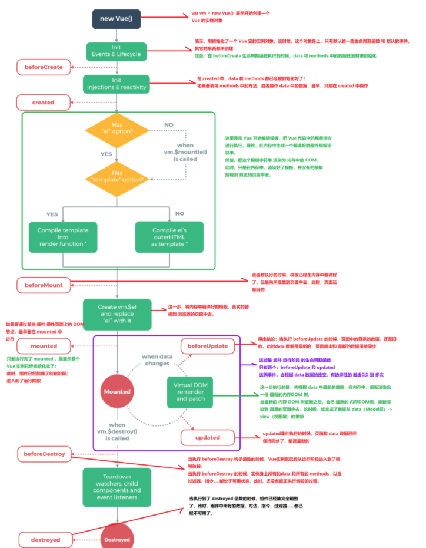

<body> | |
<div id="app"> | |
<h3 id="h3"></h3> | |
<input type="button" value="修改msg" @click="msg='No'"> | |
</div> | |
<script> | |
var vm = new Vue({ | |
el:'#app', | |
data:{ | |
msg:'ok', | |
}, | |
methods:{ | |
show(){ | |
console.log('执行了show方法') | |
} | |
}, | |
组件创建期间的4个钩子函数 | |
一、第一个生命周期函数，表示实例完全被创建之前，会执行这个函数 | |
在beforeCreate生命周期函数执行的时候，data 和 methods 中的数据还没有被初始化 | |
beforeCreate() { | |
console.log(this.msg) //undefind | |
this.show() //is not defind | |
}, | |
二、第二个生命周期函数 | |
在 created 中，data 和 methods 都已经被初始化好了！ | |
如果要调用 methods 中的方法，或者操作 data 中的数据，最早，只能在 created 中操作 | |
created() { | |
console.log(this.msg) //ok | |
this.show() // 执行了 show 方法 | |
}, | |
三、第三个生命周期函数，表示模板已经在内存中编译完成，但是尚未把模板渲染到页面中 | |
在beforeMount执行的时候，页面中的元素没有被真正替换过来，知识之前写的一些模板字符串 | |
beforeMount() { | |
console.log(document.getElementById('h3').innerText) // | |
}, | |
四、第四个生命周期函数，表示内存中的模板已经真实的挂载到页面中，用户已经可以看到渲染好的页面 | |
这个mounted是实例创建期间的最后一个生命周期函数，当执行完 mounted 就表示，实例已经被完 | |
全创建好了，此时，如果没有其它操作的话，这个实例，就静静地在内存中不动 | |
mounted() { | |
console.log(document.getElementById('h3').innerText) //ok | |
}, | |
组件运行阶段的2个钩子函数 | |
五、第五个生命周期函数，表示 界面还没有被更新，但是数据肯定被更新了 | |
得出结论：当执行 beforeUpdate 的时候，页面中的显示的数据，还是旧的，此时data 数据是最 | |
新的，页面尚未和 最新的数据保持同步 | |
beforeUpdate() { | |
console.log('界面上元素的内容'+ document.getElementById('h3').innerText) // 没有执行，因为数据没改变 | |
console.log('data 中的msg数据是：' + this.msg) | |
}, | |
六、第六个生命周期函数 | |
updated事件执行的时候，页面和 data 数据已经保持同步了，都是最新的 | |
updated() { | |
console.log('界面上元素的内容'+ document.getElementById('h3').innerText) //No | |
console.log('data 中的msg数据是：' + this.msg) //No | |
}, | |
第七个 和 第八个销毁阶段的函数在上面的图片中 | |
}) | |
</script> | |
</body> |